1.1 - Integers & Number Lines
Did you know that all of mathematics is actually built up from simple things like counting? Even advanced topics like algebra and calculus are just clever ways of organizing and extending basic ideas (like moving forward and backward on a number line).
In this lesson, we’ll use the number line not just to count, but to add, subtract, and compare positive and negative numbers. That might sound basic, but it’s the foundation of nearly everything else you’ll do in Algebra.
Negative numbers can be tricky, especially when the rules don’t always match what your gut tells you. But if you can master the way they work on the number line (including things like opposites, absolute value, and comparison) you’ll be setting yourself up for success in the rest of the course.
Printable Guided Notes for this lesson — fill-in notes to print and write on.
🔥 Warm Up
Answer as best you can – even if you aren’t sure!
What number is exactly halfway between 3 and 9?
Which number is bigger: -4 or -9?
Which number is farther from 0: -7 or 5?
👥 Learn Together
1.1.1 - The Number Line Is More Than Just Counting
You already know how to count (0, 1, 2, 3, and so on). The number line extends that idea in both directions.
Let’s draw a number line from -10 to 10
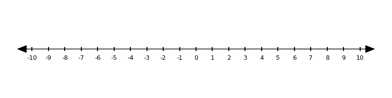
Here, every tick mark is an integer (a whole number).
We can use this number line to see what happens when we add, subtract, or compare numbers.
Are there other ways to draw a number line?
Yes! Number lines can be drawn over different ranges and scales. For example, here is a number line that counts from -10 to 25 in steps of 5.
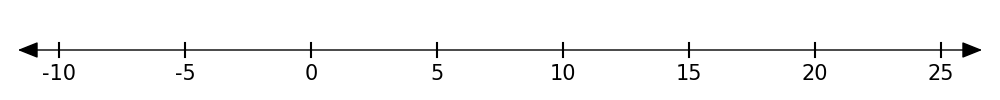
In fact, number lines don’t even have to be horizontal. Here is a vertical number line that goes from 0 to 100 in steps of 10.

Example 1: How many numbers between 3 and 5?
If you are counting integers, there is 1 integer between 3 and 5 (just 4). But if you mean real numbers, there are infinitely many between 3 and 5. Here are some number lines that might help convince you.
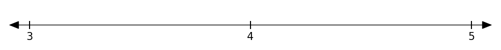
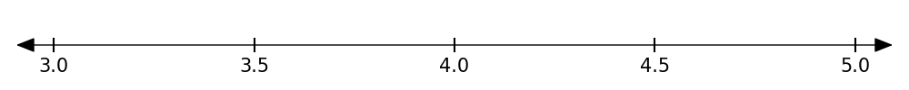
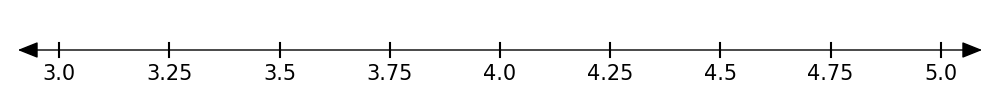
Here are a few examples:
- thermometer
- ruler
- timeline
- American football field
- volume slider on a phone
1.1.2 - Understanding Opposites
Let’s look at a pair of numbers, 3 and -3.
These are called opposite numbers. They are the same distance from zero but on opposite sides of it.
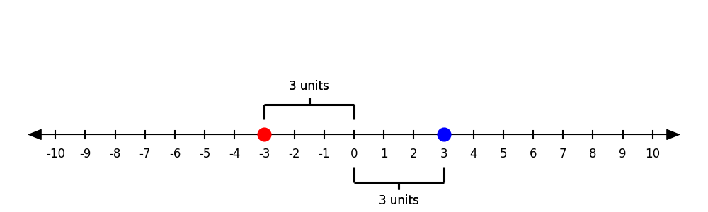
The opposite of zero is zero. Zero is the only number that is its own opposite!
1.1.3 - What Is Absolute Value?
Absolute value measures the distance from zero. Absolute value is written as a number between two bars. For example, the absolute value of -5 is written \(|-5|\).
Take a look at the number -5. The number line shows that its absolute value is 5 because it is 5 units away from zero.
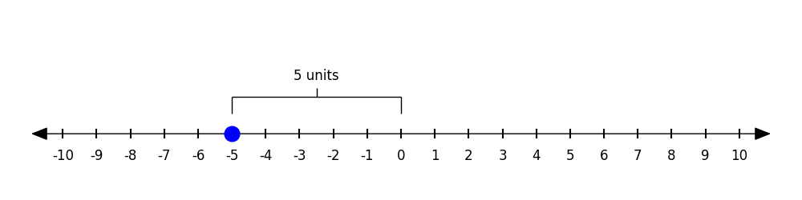
You can see that |5| is also 5 for the same reason!
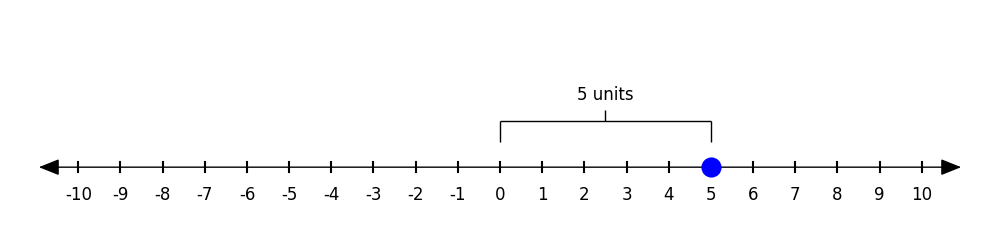
Absolute value is often used for describing the distance between two points. Suppose you live 3 miles to the east of the school and your best friend lives 5 miles to the west. How far apart are your houses? This is easy to see with a number line.
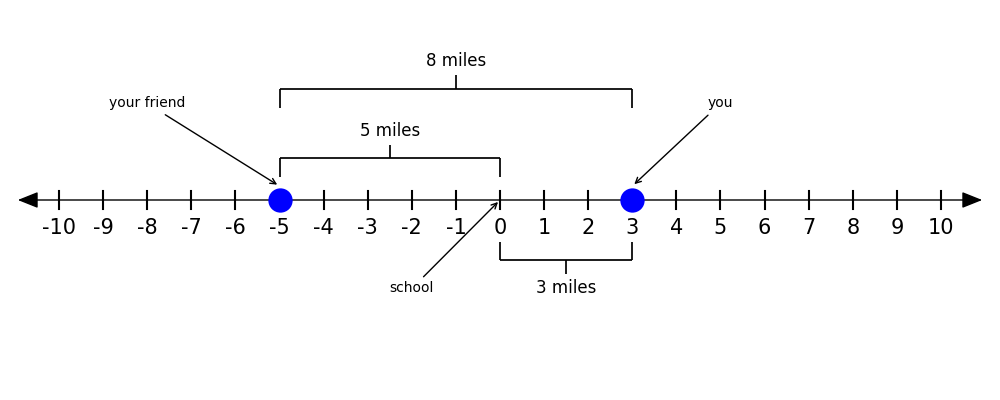
You can compute your distances by adding |-5| + |3|, by |-5 - 3|, or by |3 - (-5)|. All three of these give the same answer, 8 miles. What would change if we did not use absolute value?
Absolute value is never negative, because distance is never negative.
Day 2 starts here
1.1.4 - Comparing Integers
We can also use the number line to compare values.
Let’s compare 2 to -7.
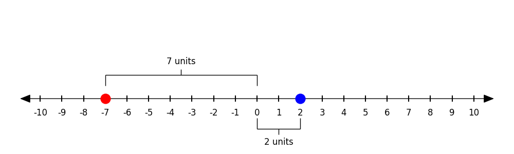
You can see from the number line that 2 is greater than (>) -7 because 2 is to the right of -7.
You can also see that -7 is farther from zero than 2 and so |-7| > |2|.
It is easy to get confused here. When we say which number is “bigger” (or greater than), we are asking which number is farther to the right on the number line. This is not the same as absolute value, which asks which one is furthest from zero.
3 > -8 because it is farther to the right but |-8| > |3| because -8 is farther from zero.
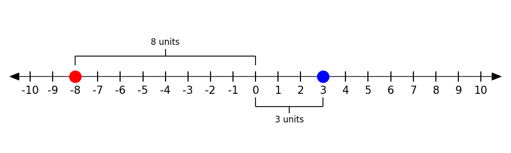
1.1.5 - Number Lines and Arithmetic
We can also use the number line to model adding and subtracting integers.
Examples:
- Addition: \(-2 + 6 = 4\)
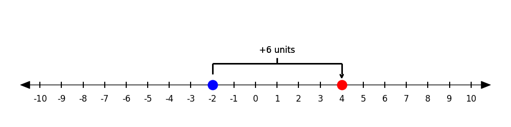
Imagine that you are \(\$2\) in debt. If someone pays you \(\$6\) you can pay off the debt and have \(\$4\) left over.
- Adding a negative: \(150 + (-5) = 145\)
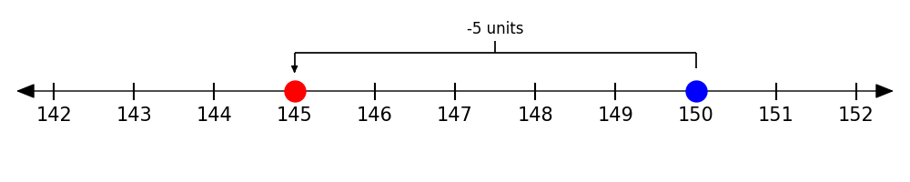
You have \(\$150\) in the bank. The bank adds a fee for being under their \(\$200\) minimum balance. You now have \(\$145\).
- Subtraction: \(400 - 450 = -50\)
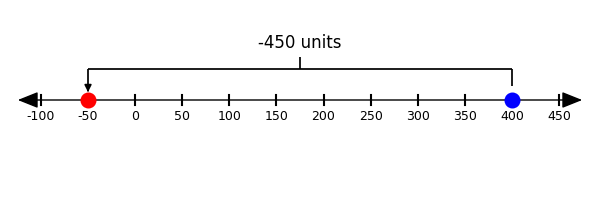
If you only have \(\$400\) but spend \(\$450\) on a credit card, you are now \(\$50\) in debt.
- Subtracting a negative: \(201 - (-5) = 206\)
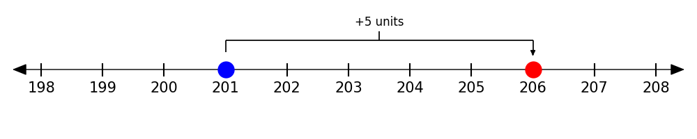
Example: The bank made a mistake, you had \(\$201\) in your account so they took off the \(\$5\) fee. Now you have \(\$206\).
✍️ Practice On Your Own
Working With Number Lines
Draw a number line that shows:
-4, 0, and 3.
Your age
The number halfway between 5 and 9.
What question could match this number line? (e.g. How old is grandma?)
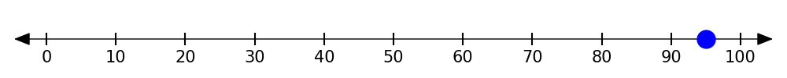
Opposites
What is the opposite of 42?
What is the opposite of -3?
Draw a number line with two numbers that are opposites.
Does 3.5 have an opposite? If yes, what is it?
Comparing Numbers
Which number is greater, 5 or -10?
Which number has the greater absolute value, 5 or -10?
Is 28 bigger than -30?
Use (>) or (<) to compare:
-11 ___ -13
7 ___ -2
|-3| ___ |5|
Which is bigger?
-4 or -5
3 or the opposite of 7
|-5| or |4|
Use a number line to compare:
-7 to 2.
The year you were born and the current year
Addition and Subtraction
Show these on a number line:
\(-3 + 5\)
\(3 - 5\)
\(-3 + (-3)\)
\(3 - (-3)\)
Word Problems
Solve using a number line
The temperature was -12°F. It warms up by 20°. What is the new temperature?
A diver is 45 feet below sea level. She dives 30 feet deeper. How far down is she?
Your bank account is at -\(\$8\). You deposit \(\$5\). What is your new balance?
Warm-Up
6
-4
-7
Working With Number Lines
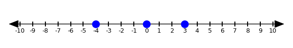
Answers vary. Here is what a 15-year-old would show:
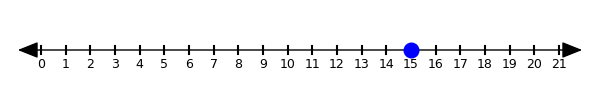
7
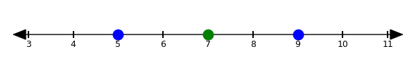
Example question: “What was the temperature on July 4th?”
Opposites
-42
3
Answers vary. Example:
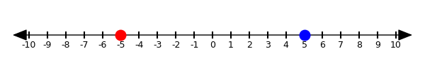
Yes (the opposite is -3.5)
Comparing Numbers
5 is greater (farther right on the number line)
-10 has the greater absolute value (10 > 5)
Yes (28 is greater because it is to the right of -30)
- -11 > -13
- 7 > -2
- |-3| < |5| (3 < 5)
- -4 > -5
- 3 > -7
- |-5| > |4| (5 > 4)
2 > -7
Answers vary: for example, 2025 > 1985
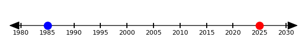
Addition and Subtraction
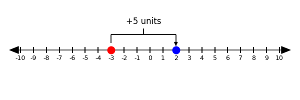
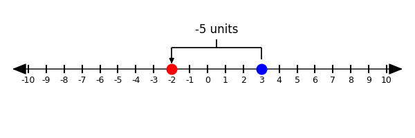
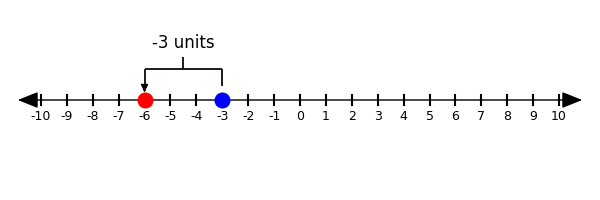
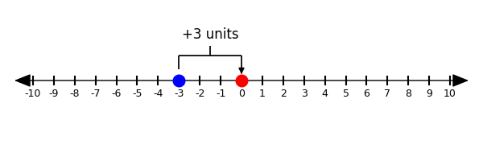
Word Problems
8°F
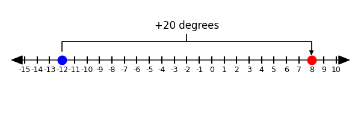
75 feet down
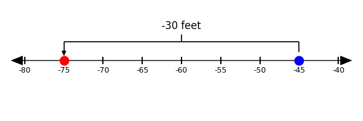
-\(\$3\)
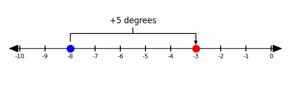